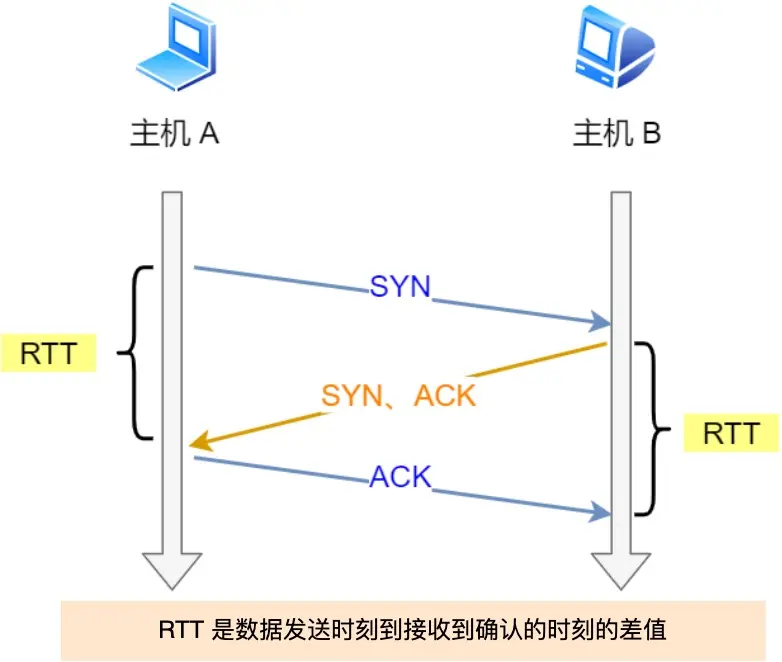
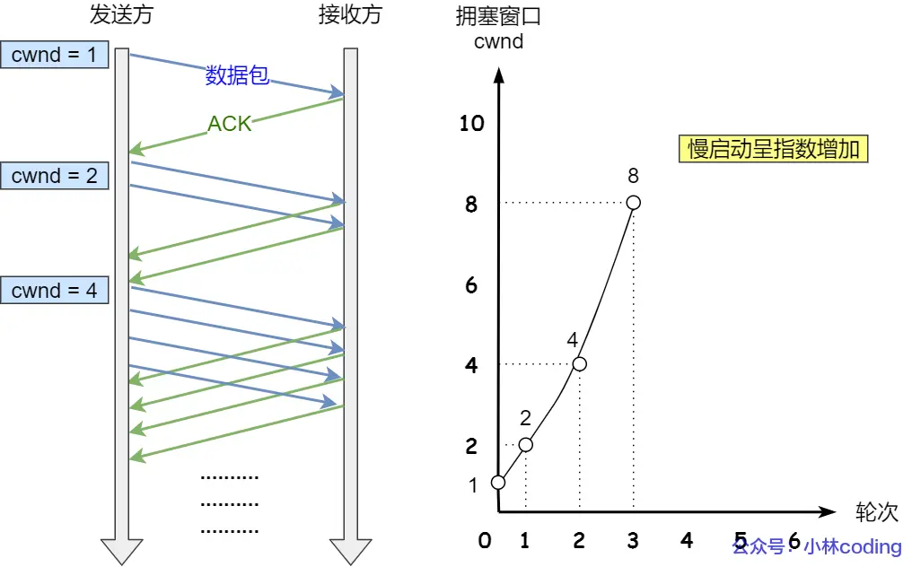

TCP 重传、滑动窗口、流量控制、拥塞控制
一、重传机制
TCP实现可靠传输的方式之一就是通过序列号与确认应答。
在TCP中，当发送端的数据到达接收主机时，接收端主机就会返回一个确认应答消息，表示已经收到消息。
但是在错综复杂的网络中，并不一定能如上图那么顺利正常的传输数据，万一数据在传输过程中丢失了呢？ 因此TCP针对数据包丢失的情况 ，会用重传机制来解决。
常见的重传机制：
超时重传。
快速重传。
SACK。
D-SACK。
超时重传
重传机制的其中一个方式，就是在我们发送数据的时候，设定一个定时器，当超过指定的时间后，没有收到对方的ACK确认应答报文，就会重发数据，也就是我们常说的超时重传。
TCP会在一下两种情况会超时重传：
数据包丢失。
确认应答丢失。
超时时间应该设置多少？
RTT：Round-Trip Time 往返时延，如下图所示：

RTT指的是数据发送时刻到接收到确认的时刻的差值，也就是包的往返时间。
超时重传的时间是以RTO（Retrasmission Timeout超市重传时间）表示。
假设在重传的情况下 ，超时时间是RTO（较长或较短）时，会发生什么呢 ？

如果超时时间RTO较大，重发就慢 ，丢了老半天才重发，没有效率性能比较差。
当超时是按RTO较小，会导致可能并没有丢就重发，于是重发的就快，会增加网络拥塞，会导致更多的超时。
精确的测量超时时间RTO的值是非常重要的，这可以让我们重传机制更高效。
根据上边的两种情况，我们可以知道，超时重传时间RTO的值应该略大于报文的RTT的值。
到此可以觉得超时重传时间RTO的值计算，也不是很复杂。
好像就是在发送端发送包时记录下t0，然后接收端在把这个ack回来时再记录一个t1，于是RTT = t1 - t0。
实际上 报文往返的RTT的值是会经常变化的，因为我们网络也是时长变化的，也就是因为报文往返的RTT的值是经常波动变化的，所以，超时重传时间RTO的值应该是一个动态变化的值。
我们来看下Linux是如何计算RTO的值：
往返时间，通常需要采用以下两个方式：
需要TCP通过采用RTT的时间，然后进行加权平均，算出一个平滑RTT的值，而且这个值还是不断变化的，因为网络状态不断变化。
除了采用RTT，还要采样RTT的动态波动范围，这样就可以避免如果RTT有一个大的波动的话，很难被发现。
RFC6289建议使用以下的工时计算RTO：
其中，SRTT是计算平滑的RTT，DevRTR是计算平滑的RTT与最新的RTT的差距。
在Linux下，α = 0.125，β = 0.25， μ = 1，∂ = 4（通过实验调出来的）。
如果超时重发的数据，再次超时的时候，又需要重传的时候，TCP的策略是超时间隔加倍。
也就是说每当遇到一次超时重传的时候，都会将下一次的超时重传的时间设置为先值的2倍，2次超时之后说明网络环境差，不宜频繁反复的发送。
超时触发重传存在的问题是超时周期可能相对比较长，是不是有更快的方式呢？可以用快速重传机制来解决超时重发的时间等待。
快速重传
TCP还有一个快速重传Fast Restransmit）机制，它不以时间为驱动，而是以数据驱动重传。
快速重传机制是如何工作的呢？其实很简单，如下图所示：
如上图所示，发送方发了1，2，3，4，5份数据：
第一份Seq1先送到了，与实际Ack回2。
结果Seq2因为某些原因没有手打，Seq3到达了，于是还是Ack回2。
后面的Seq4和Seq5都收到了，但还是Ack的2，因为Seq还是没有收到。
发送段收到了三个Ack=2的确认，知道了Ack2没有收到，就会在定时器过期之前，重传丢失的Seq2。
最后，收到了Ack2，此时因为Seq3，Seq4，Seq5都收到了于是直接回Ack回6。
所以快速重传的工作方式是当收到三个相同的ACK报文的时候，会在定时器过期之前重传丢失的报文段。
快速重传机制只解决一个问题，就是超时时间的问题，但是它依然面临着另外的一个问题，就是重传的
是重传一个还是重传所有。
举例子来说明，假设发送方发了6个数，编号的顺序是Seq1~Seq6，但是Seq2、Seq3都丢失了，那么接收方在收到Seq4、Seq5、Seq6时，都是回复ACK给发送方，但是发送方并不清楚着连续的ACK是接收方收到的哪个报文而恢复的，那就是选择重传Seq2一个报文，还是重传Seq2之后已发送的所有报文呢？
如果只选择重传Seq2一个报文，那么重传的效率就太低了，因为对于丢失的Seq3报文，还得后续收到三个重传的ACK3才能触发重传。
如果选择Seq2之后已发送的所有报文，虽然能同时重传已丢失的Seq2和Seq3报文，但是Seq4、Seq5、Seq6的报文已经被接收过了，对于重传Seq4~Seq6这部分数据相当于做了一次无用功。资源浪费。
可以看到，不管是重传一个报文，还是重传已发送的报文都会存在问题。
为了解决不知道该重传哪写TCP报文，于是就有了SACK方法。
SACK方法
SACK（Selective Acknowledgment），选择性确认。
这种方式需要再TCP头部选项字段中加一个SACK的东西，它可以将已经收到的数据信息发送给发送方，这样发送方就可以知道哪些数据已经收到了， 哪些数据是没有收到，知道了这些素具，就可以只重传丢失的数据。
如下图所示，发送方收到了三次同样的ACK确认报文，于是就会触发快速重发机制，通过SACK信息发现只有200~299这段时间丢失，则重发时，就只选择了这个TCP段进行重复。

如果支持SACK的话，必须发送和接收双方都要支持，在Linux下，可以通过net.ipv4.tcp_sack参数打开这个功能。（Linux2.4版本后是默认打开的）
Duplicate SACK
Duplicate SACK又称D-SACK，主要是使用了SACK来告诉发送方有哪些数据被重复接收了。
举个例子，说明D-SACK作用：
ACK丢包

接收方发给发送方的两个ACK确认应答都丢失了，所以发送方超时后，重传了第一个数据包（3000~3499）。
于是接收方发现数据是重复收到的，于是回了SACK=3000~3500，告诉发送方3000~3500数据已经被接收 了，因为ACK已经到了4000，意味着4000之前的所有数据都收到了，所以这个SACK就代表了D-SACK。
这样发送方知道，数据没有丢失，是接收方的ACK确认报文丢失了。
网络延时
数据包（1000~1499）被网络延迟了，导致发送方没有收到ACK1500的确认报文。
而后面的报文达到三个相同的ACK确认报文，就会触发快速重传机制，但是在重传之后，被延迟的数据包（1000~1499）又到了接收方。
所以接收方回了一个SACK=1000~1500，因为ACK已经到了3000，所以这个SACK是D-SACK，表示已经收到了重复的包。
这样发送方就知道快速重传机制触发的原因不是发出去的包丢了，也不是因为回应的ACK包丢失了，而是因为网络延迟了。
D-SACK有几个好处：
可以让发送方知道，是发出去的包丢了，还是接收方回应的ACK包丢了。
可以知道是不是发送方的数据报被网络延迟了。
可以知道网络中的是不是把发送方的数据报给复制了。
在Linux下，可以通过net.ipv4.tcp_dsack参数打开这个功能。（Linux2.4版本后是默认打开的）
二、滑动窗口
窗口
我们都知道TCP是每发送一个数据，都要进行一次确认应答，当上一个数据报收到了应答了，再发送下一个，这个模式有点像我和你面对面聊天，你一句我一句但是这种方式的缺点就是效率比较低。
如果你说完一句我在处理其他事情，没有及时回复你，那就需要等我回复之后才会恢复你，很显然效率很低。

所以，这样传输方式有一个确定就是数据包的往返时间越长，通信的效率就越低。
为了解决这个问题，TCP引入了窗口的概念，及时往往返回时间较长的情况下 ，它也不会降低网络通信的效率，那么有了窗口，就可以指定窗口的大小，窗口的大小指的是无需等待确认应答，而可以继续发送数据的最大值。
窗口的实际上是操作系统开辟的一个缓存空间 ，发送方主机在等到确认放返回之前，必须在缓冲区中保留已发送的数据，如果按期收到确认应答，此时数据就可以从缓存区清除。
假设窗口的带下位3个TCP段，那么发送方就可以连续发送3个TCP段，并且中途有ACK丢掉。可以通过下一个确认应答进行确认，如下图所示：
如上图中，ACK600确认报文丢失， 也没有关系，因为可以通过下一个确认应答进行确认，只要发送方收到了ACK700确认应答， 意味着700之前的所有素具都被接收方收到了，这个模式叫做累加确认或者累计应答。
窗口大小由哪一方决定
TCP头有一个字段叫做Window也就是窗口的大小。
这个字段是接收端告诉发送端自己还有多少缓冲区可以接收数据，于是发送端就可以根据这个接收端的处理能力来发送数据，而不会导致接收端处理不过来。
所以，通常窗口的大小是由接收方的窗口的大小来决定的。
发送方发送的数据大小不能超过接收方的窗口的大小，否则接收方就无法正常接收到数据。
发送方的滑动窗口
我们先来看下发送方的窗口，下图就是发送方缓存的数据，根据处理的情况可以分为4个部分，其中深蓝色部分是发送窗口，紫色部分是可用窗口。
#1是已经发送并收到ACK确认的数据，1~31字节。
#2是已发送但未收到ACK确认的数据，32~45字节。
#3是未发送但总的大小在接收方处理范围内（接收方还是有空间），46~51字节。
#4是未发送但总的大小超过接收方处理范围（接收方没有空间），52字节以后。
如下图，当发送方把数据【全部】都发送出去后，可用窗口大小就是0了，表明可用窗口耗尽， 在没收到ACK确认之前是无法继续发送数据了。

如下图，当收到之前的发送的数据32~36字节的ACK确认应答后，如果发送窗口的大小没有变化，而滑动往右移动5个字节，因为右5个字节的数据被应答确认，接下来52~56字节又变成了可用窗口，那么后续页可以发送52~56这5个字节的数据了。
程序是如何表示发送方的四个部分呢
TCP滑动窗口方案使用三个指针来跟踪四个传输类别每一个类别的字节，其中两个指针式绝对指针（指特定的序列号），一个是相对指针（需要做偏移）。
SND.WND：表示发送窗口的大小，大小由接收方确定。
SND.UNA：（Send Unacknoleged）是一个绝对指针，它指向的是已发送但未收到确认的第一个字节的序列号，也就是#2的第一个字节。
SND.NXT：也是第一个绝对指针，它指向未来发送但可发送范围的第一个字节的序列号，也就是#3的第一个字节。
指向#4的第一个字节是个相对指针，需要SND.UNA指针加上SND.WND大小的偏移量，就可以指#4的第一个字节了。
那么窗口的大小就可以计算：
接收方的滑动窗口
看下接收方的滑动窗口，相对来说简单点儿，根据处理的情况划分成三个部分：
#1 + #2是已经成功接收并确认的数据（等待应用进程读取）。
#3是未收到数据单可以接收的数据。
#4未收到的数据并不可以接收的数据。

其中三个接收部分，使用两个指针进行划分：
RCV.WND：表示接收窗口的大小它会通告给发送方。
RCV.NXT：是一个指针，它指向期望从发送方发送来的下一个数据字节的序列号，也就是#3的第一个字节。
指向#4的第一个字节，是个相对指针，它需求RCV.NXT指针加上RCV.WND大小的偏移量，就可以指向#4的第一个字节了。
接收窗口和发送窗口的大小是相等的吗？
不完全相等，接收窗口的大小约等于发送窗口的大小的。
因为滑动窗口并不是一成不变的，比如当接收方应用进程读取数据的速度非常的快，这样的话接收窗口就可以很快就空缺出来，那么新的接收窗口大小，是通过TCP报文中的Windows字段来告诉发送方，那么这个传输过程是存在时延的，所以接收窗口和发送窗口约等于的关系。
二、流量控制
发送方不能无脑的发送数据给接收方，要考虑到接收方的处理能力。
如果一直无脑的发数据给对方，但对方处理不过来，那么就会导致触发重发机制，从而导致网络流量无端的浪费。
为了解决这种现象发生，TCP提供了一种机制可以让发送方根据接收方的实际接收能力来控制发送的数据量，这就是所谓的流量控制。
举个例子来说明，假设以下的场景：
服务端是发送方，客户端是接收方。
假设接收窗口和发送窗口相同，都为200。
假设两个设备在这个传输过程中都保持相同的窗口大小，不受外界影响。
根据上图的流量控制，说明下每个过程：
客户端向服务端发送请求数据报文，这里说明下，本次例子是把服务端作为发送方，所以没有画出服务端接收窗口。
收到请求报文后，发送确认报文和80字节的数据，于是可用窗口Usable减少为120字节，同时SND.NXT指针也会向右偏移80字节，指向321，这意味着下次发送数据的时候，序列号是321。
客户端收到80字节数据之后，于是接收窗口往右移动80字节，RCV.NXT也就是执行321，这意味着客户端期望的下一个报文的序列号是321，接着发送确认报文给服务端。
服务端再次发送了120字节给客户段，于是可用窗口耗尽为0，服务端无法再继续发送数据了。
客户端收到120字节的数据后，于是接收窗口往右移动120字节，RCV.NXT也就指向441，接着发送确认报文给服务端。
服务端收到对80字节数据的确认报文后，SND.UNA指针往右哦按以后执行321，于是可用窗口Usable增到到80。
服务单收到对120字节数据的确认报文后，SND.UNA指针往右偏移指向441，于是可用窗口Usable增到到200。
服务单可以继续发送了，于是发送了160字节的数据后，SND.NXT执行601，于是可用窗口Usable减少到40。
客户端收到160字节后，接收窗口往右移动了160字节，RCV.NXT也就是一字型了601，接着发送确认报文给服务端。
服务端收到对160字节数据的确认报文后，发送窗口往右移动了160字节，于是SND.UNA指针偏移了160后指向601，可用窗口Usable也就增大了200。
操作系统缓冲区与滑动窗口之间的关系
前面的流量控制例子，我们嘉定了发送窗口和接收窗口是不变的，但是实际上，发送窗口和接收窗口中所存放的字节数都是放在系统内存缓冲区中的，而操作系统的缓冲区，会被操作系统调整。
当应用进程没有办法及时读取缓冲区的内容时，也会对我们的缓冲区造成影响。
那操作系统的缓冲区，是如何影响发送窗口和接收窗口呢？
在看一个例子，当应用程序没有及时读取缓存时，发送窗口和接收窗口的变化情况。
考虑以下的场景：
客户端作为发送方，服务端作为接收方，发送窗口和接收窗口初始大小为360。
服务端都非常的繁忙，当收到客户端的数据时，应用层不能及时读取数据。
根据上图的流量控制，说明下每个过程：
客户端发送了140字节数据后，可用窗口变为220（360-140）。
服务端收到140字节数据，但是服务端非常繁忙，应用进程只读取了40个字节，还有100字节占用着缓冲区，于是接收窗口收缩了260（360-100），最后发送确认信息时，将窗口大小通告给客户端。
客户端收到确认和窗口通告报文后，发送窗口减少为260。
客户端发送180字节数据，此时可用窗口减少到了80。
服务端收到180字节数据，但是应用程序没有读取任何的数据，这180字直接就留在了缓冲区，于是接收窗口收缩到了80（260-180），并在发送确认信息的时候通过窗口大小告诉给客户端。
客户端收到确认和窗口报文后，发送窗口减少为80。
客户端发送80字节数据后，可用窗口耗尽。
服务端收到80字节数据，但是应用程序依然没有读取任何的数据，这80字节留在了缓冲区，于是接收窗口收到了0，并在发送确认信息时，通过窗口大小给客户端。
客户端收到确认和窗口通告报文后，发送窗口减少为0。
可见最后窗口都收缩为0，也就是发生了窗口关闭，当发送可用窗口变为0时，发送方实际上会定时发送窗口探测报文，以便知道接收方窗口是否发生了变化。
例子2，当服务端系统资源非常紧张的时候，操作系统可能会直接减少了接收缓存区的大小，这时候应用程序又无法及时读取缓存数据，那么这时候就严重的事情就发生了，会出现数据包丢失的现象。
过程如下：
客户端发送140字节的数据，于是可用窗口减少到了220。
服务端因为现在非常繁忙，操作系统于是就把接收缓存减少了120字节，当收到140字节数据后，又因为应用程序没有读取任何数据，所以140字节留在了缓冲区中，于是接收窗口大小从360收缩成了100，最后发送方确认信息时，通告窗口大小给对方。
此时客户端因为还没有收到服务单的通告窗口报文，所以不知道此时接收窗口收缩成了100，客户端只会看自己的可用窗口还有220，所以客户端就发送了180字节的数据，于是可用窗口减少到40。
服务端收到了180字节数据时，发现数据的大小超过了接收窗口的大小，于是把数据报给丢弃了。
客户端收到第2步时服务端发送的确认报文和通告窗口的报文，尝试减少发送窗口到100，把窗口的右端向左收缩了80，此时可用窗口的大小就会出现诡异的负值。
所以，如果发生了先减少缓存，再收缩CA混口，就会出现丢包的现象。
为了防止这种情况发生，TCP规定是不允许同时减少缓存又收缩窗口的，而是采用先收缩窗口，过段时间再减少缓存，这样就可以避免丢包的情况。
窗口关闭
我们知道，TCP是通过让接收方指明希望从发送方接收的数据大小（窗口大小）来进行流量控制。
如果窗口大小为0时，就会组织发送方给接收传递数据。直到窗口变为非0为止，这就是窗口关闭。
窗口关闭潜在的危险
接收方向发送方通告窗口大小的时候，是通过ACK报文来通告的。
那么，当发生窗口关闭的时候，接收方处理完数据后，会向发送方通告一个窗口非0的ACK报文，如果这个通告窗口的ACK报文在网络中丢失了，那就麻烦大了。
这就就会导致发送方一直等待接收方的非0窗口通知，接收方一直等待发送方的数据，如果不采取措施的时候就是互相等待的过程就出现了死锁的现象。
TCP是如何解决窗口关闭时，潜在的死锁风险呢？
为了解决这个问题，TCP每个连接都设置了一个持续定时器，只要TCP连接一方收到对方零窗口通知，就启动持续定时器。
如果持续定时器超时，就会发送窗口探测（Window probe）报文，而对方在确认这个探测报文时，给出自己现在接收窗口的大小。

如果接收窗口仍然是0，那么收到这个报文的一方就会重新启动持续计时器。
如果接收窗口不是0，那么死锁的局面就可以被打破。
窗口探测的次数一般为3次，每次大约是30~60秒，如果3次过后接收窗口还是0的话，有的TCP实现就会发生RST报文来中断连接。
糊涂窗口综合征
如果接收方太忙，来不及取走接收窗口里的数据，那么就会导致发送方的发送窗口越来越小。
到最后，如果接收方腾出几个字节告诉发送方现在有几个字节的窗口，而发送方会义无反顾的发送几个字节，这就是糊涂综合征。
要知道，我们的TCP+IP头有40个字节，为了传输那几个字节的数据，要搭上这么大的开销，这太不经济了。就好像一个人可以承载50人的大巴车，每次来了一两个人，就直接发车了。要想解决这个问题，必须指定一个规则，大巴车四级包含的数量大于35才能发车。
举例子：接收方窗口大小是360字节，但接收方由于某些原因陷入困境，假设接收方的应用层读取的能力如下：
接收方每接收3个字节，应用程序就只能从缓冲区读取1个字节的数据。
在下一个发送方的TCP段到达之前，应用程序还从缓冲区中去读了40个额外的字节。
每个构成的窗口大小的变化，在途中描述的就已经很清楚了，可以发现窗口不断减少了，并且发送的数据是比较小的。所以，糊涂窗口总和证的现象是可以发出在发送方和接收方：
接收方可以通告一个小的窗口。
而发送方可以发送小的窗口。
于是，要解决糊涂窗口综合征，就要同时解决上面两个问题就可以了：
让接收方不通告小窗口给发送方。
让发送方避免发送小数据。
让接收方不通告小窗口给发送方
接收方的通常的策略，当窗口大小小于min(MSS, 缓存空间/2)，也就是MSS与1/2缓存大小中的最小值时，就会向发送方通告窗口为0，也就阻止了发送方发送数据。
等待接收反处理了一些数据之后，窗口大小>=MSS，或者接收方缓存空间有一半可以使用，就可以把窗口打开让发送方发送数据过来。
发送方如何避免发送小数据
发送方通常的策略，使用Nagle算法，该算法的思路就是延时处理，只有满足下面两个条件中的任意一个体检，才可以发送数据：
条件1：要等到窗口大小>= MSS并且数据大小 >= MSS。
条件2：收到之前发送数据的ack包。
只要上面2个条件都不满足，发送方一直在囤积数据，直到满足上面的发送条件、
Negle伪代码如下：
1if 有数据发送{2 if 可用窗口>= MSS and 可发送的数据 >= MSS {3 立刻发送MSS大小的数据 4 }else {5 if 有未确认的数据 {6 将水放入缓存等待接收ACK7 } else {8 立刻发送数据9 }10 }11}注意，接收方需要满足不通告小窗口给发送方 + 发送方开启Nagle算法，才能避免糊涂窗口综合征。
另外，Nagle算法默认是打开的， 如果对于一些需要小数据包交互的场景程序，比如telnet 或 ssh这样的交换比较强的程序，则需要关闭Nagle算法。
可以在Socket设置TCP_NODELAY选项来关闭这个算法（关闭Nagle算法没有全局参数，需要格努自己每个应用自己的特点来关闭的）。
11setsockopt(sock_fd, IPPROTO_TCP, TCP_NODELAY, (char *) &value, sizeof(int));三、拥塞控制
为什么要有拥塞控制呢，不用流量控制呢？
前面的流量控制是避免发送方的数据填满接收方的缓存，但是并不知道网络中发生了什么。一般来说，计算机网络处在一个共享的环境，因此也有可能是因为其他主机之间的通信使得网络拥塞。
在网络中出现拥堵时，如果继续发送大量数据包，可能会导致数据包时延、丢失等，这时TCP就会重传数据，但是一旦重传就会导致网络负担更重，于是会导致更大的延迟以及丢更多的包，这个情况就会进入恶性循环不断放大。
所以TCP不能忽略网络上发生的事情，就设计了一个无私的协议，当网络发送拥塞的时候，降低发送的数据量。 于是就有了拥塞控制，控制的目的就是避免发送方的数据填满了整个网络。
为了在发送方调节所有要发送的数据的量，定义了一个叫做拥塞窗口的概念。
什么是拥塞窗口？和发送窗口有啥关系？
拥塞窗口cwnd是发送方维护的一个的状态变量，它会根据网络的拥塞程度动态的变化的。
我们在前面提到了发送窗口swnd和接收窗口rwnd是约等于的关系，那么由于加入了拥塞窗口的概念后，此时发送窗口的值 swnd = min(cwnd, rwnd)也就是拥塞窗口和接收窗口的最小值。
拥塞窗口cwnd变化规则：
只要网络中没有出现拥塞，cwnd就会增大。
但网络中出现了拥塞，cwnd就减少。
那么怎么知道当前网络是否出现了拥塞呢
其实只要发送方没有在规定时间内接收到ACK应答报文，也就是发生了超时重传，就会认为网络出现了拥塞。
拥塞控制有哪些算法
慢启动
拥塞避免
拥塞发生
快速恢复
拥塞控制算法-慢启动
TCP在刚建立完连接后，首先是有个慢启动的过程，这个慢启动的意思就是一点一点的提高发送数据报的数量，如果一上来就发送大量的额数据，这不是给网络添堵的吗 ？
慢启动的算法记住一个规则就行：当发送方每收到一个ACK，拥塞窗口cwnd的大小就会加1。
这里假定拥塞窗口cwnd和发送窗口swnd相等，举个例子：
连接建立完成之后，一开始初始化cwnd=1，表示可以传一个MSS大小的数据。
当收到一个ACK确认应答后，cwnd增加1，于是一次能够发送2个。
当收到2个ACK确认应答后，cwnd增加2，于是就可以比之前多发2个，所以这一次就能够发送4个。
当这4个ACK确认到来的时候，每个确认cwnd增加1，4个确认cwnd增加4，于是就可以比之前多发4个，所以发一次能够发送8个。
慢启动算法的变化过程如下图所示：

可以看到慢启动算法，发包的个数是指数型增长的。
慢启动涨到啥时候会停止增长？
有一个叫慢启动门限ssrthresh（slow start threshold）状态变量。
当cwnd < sshresh时，使用慢启动算法。
当cwnd >= ssthresh时，就会使用拥塞避免算法。
拥塞控制算法-拥塞避免
当拥塞窗口cwnd超过慢启动门限ssthresh就会进入拥塞避免算法。
一般来说，ssthresh的大小是65535字节，那么进入拥塞避免算法后，它的规则是：每当收到一个ACK时，cwnd增加1/cwnd。
接上面的慢启动例子，现规定ssthresh为8，当8个ACK应答确认到来的时候，每个确认增加1/8，8个ACK确认cwnd一共增加1，于是这一次能够发送9个MSS大小的数据变成了线性增长。
拥塞避免算法的变化过程：
所以，我们可以发现，拥塞避免算法就是将原本慢启动算法的指数增长变成了线性增长，还是增长阶段，但是增长的速率降低了。
就这么一直增长后，网络会慢慢进入拥塞的状态，于是就会出现丢包的现象，这时就需要对丢包的数据包进行重传。
当触发了重传机制，也就进入了拥塞发生。
拥塞控制算法-拥塞发生
当网络出现拥塞，也就是会发生数据包重传，重传机制主要有2种：
超时重传
快速重传
这两种使用的拥塞发送时不同的。
超时重传
当发生了超时重传，则就会使用拥塞发生算法，这个时候ssthresh和cwnd的值就会发生变化：
ssthresh设置为cwnd/2。
cwnd重置为1，（回复为cwnd初始值，我们假定cwnd初始值为1）。
查看系统cwnd初始值方法： Linux针对每一个TCP连接的cwnd初始值设置为10，也就是10个MSS，我们可以使用命令ss -nli命令查看每一个TCP连接的cwnd初始值，如下图所示：
拥塞发生算法的变化如下图所示：

接着，就是重新开始慢启动，慢启动就会突然减少数据流的，这时一旦超时重传，马上就回到了解放前，但是这种方法太激进了，反应也很强烈，会造成网络卡顿。
快速重传
发生快速重传的拥塞发生算法
还有更好的方式，就是快速重传算法，当接收方丢了一个中间包的时候，发送三次前一个包的ACK，于是发送端就会快速重传，不必等待超时重传。
TCP会认为这种情况不严重，因为大部分没丢，只丢了一小部分，则ssthresh和cwnd变化如下：
cwnd = cwnd / 2，也就是设置为原来的一半。
ssthresh = cwnd。
进入快速恢复算法。
快速恢复算法
快速重传和快速恢复算法一般同时使用，快速恢复算法是认为，你还能收到3个重复ACK说明网络没有那么糟糕，所以没必要说明向RTO超时那么强烈。
正如前面所说，进入快速恢复之前，cwnd和ssthreash已经被更新了。
cwnd = cwnd / 2，也就是设置为原来的一半。
ssthresh = cwnd。
然后进入快速恢复算法如下：
拥塞窗口cwnd = ssthresh + 3，（3的意思是说确认有3个数据包被收到了）。
重传丢失的数据包。
如果再收到重复的ACK，那么cwnd增加1。
如果收到新的数据的ACK后，把cwnd设置为第一步中的ssthresh的值，原因就是该ACK确认了新的数据，说明从duplicated ACK时的数据已经收到了，该回复过程已经结束，可以恢复到之前的状态了，也就是再次进入拥塞避免的状态。
快速恢复算法的变化如下图所示：

也就是说没有像超时重传一样直接回到解放前，而且是比较高的值，后续呈线性增长。